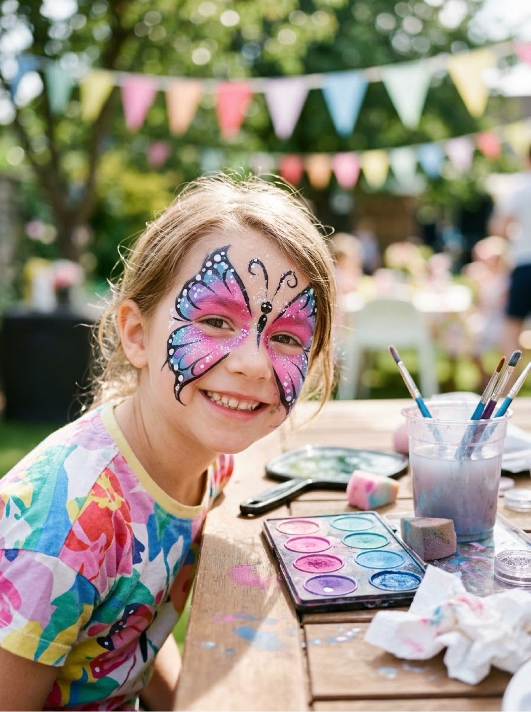
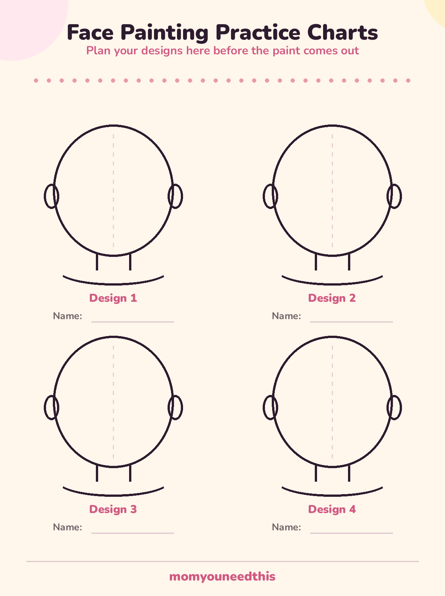
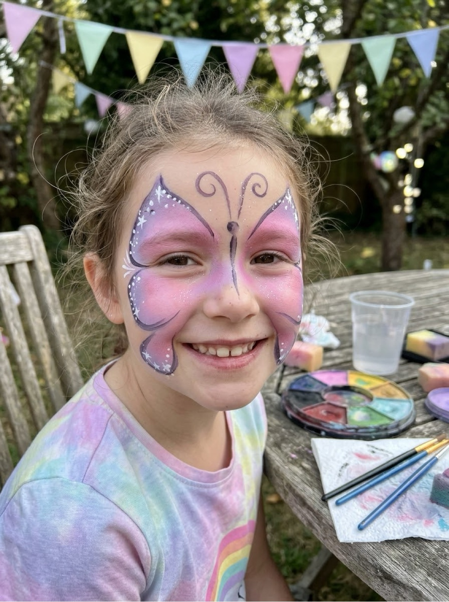
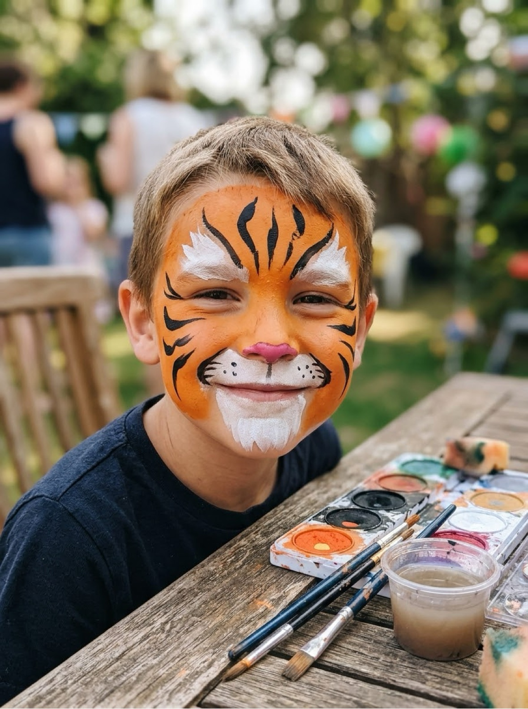
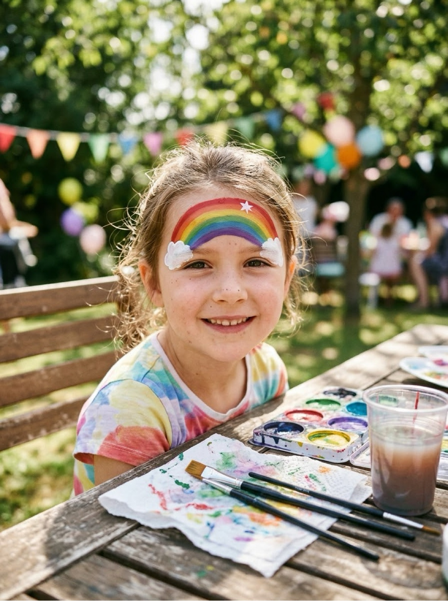
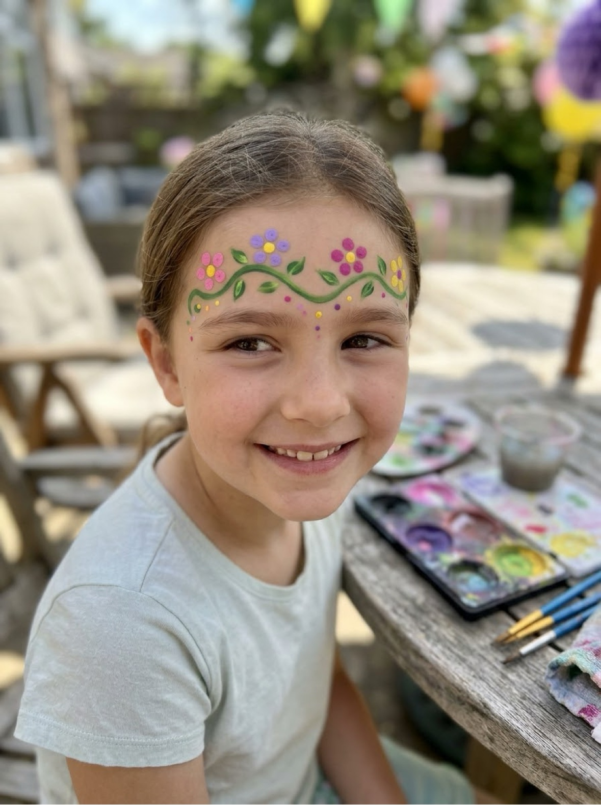
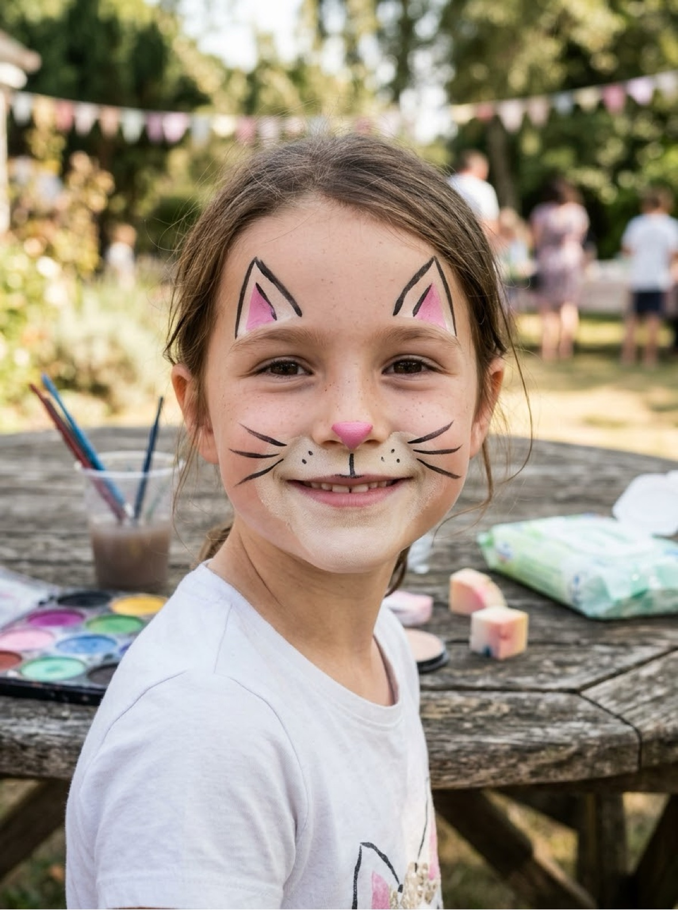
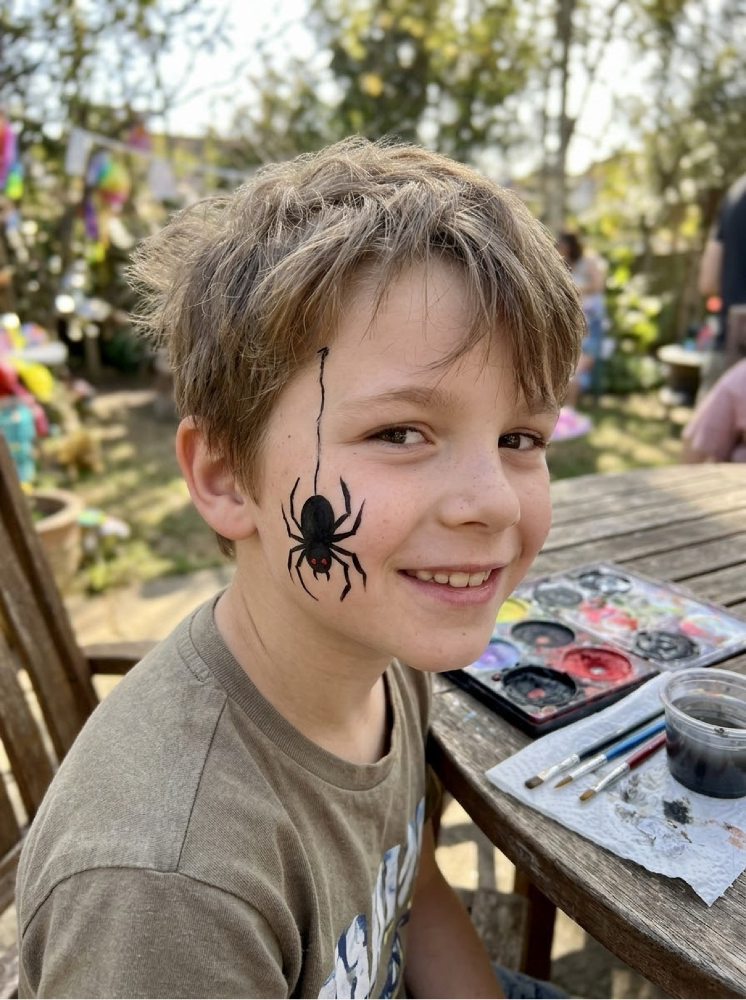
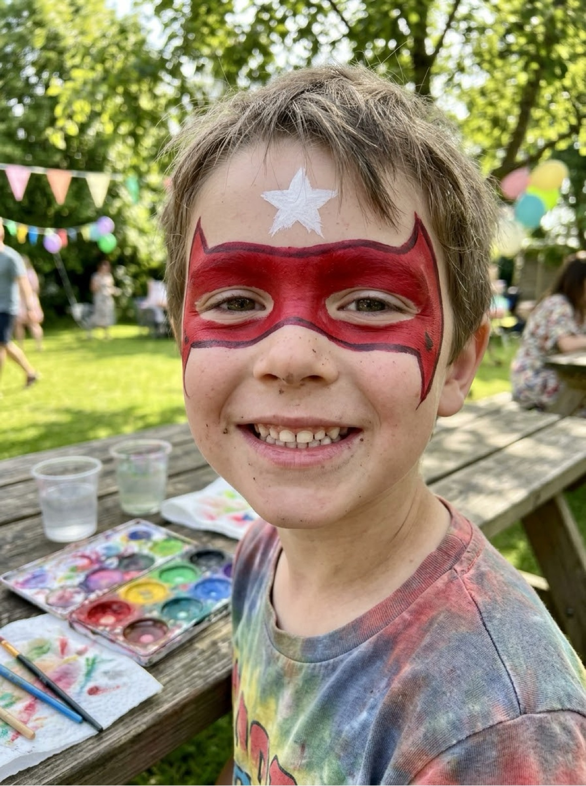
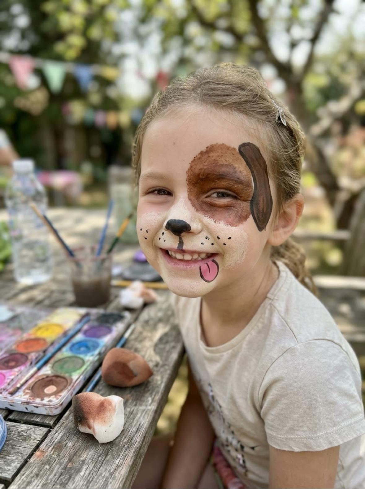

Easy Face Painting Ideas 8 Step-by-Step Designs for Parties, Halloween & Dress-Up Days
Easy face painting ideas succeed or fail on order, not talent: every design on this page is listed in the exact order you paint it — sponge the base, add the big shapes, then the details, then the outline. Eight designs kids actually ask for, the safety rules that matter, and a free practice chart so your first butterfly does not have to happen on a wiggling face.
Last updated: October 21, 2026

Quick Answer
Use only cosmetic-grade face paint made for skin, do a quick patch test first, and paint in this order: sponge base colour, big shapes with a wide brush, details with a thin brush, outlines last. Start with the rainbow or flower crown (two minutes, very forgiving), and practice any design on the free practice charts before the party. Designs below are for kids ages 3+.
At a Glance
- Ages: designs for kids 3+; painted by an adult or older sibling
- What you get: 8 step-by-step designs + free face painting practice charts
- Time: 2–5 minutes per design once you know the order
- Safety: cosmetic-grade face paint only — never craft or acrylic paint on skin
🧴 Supplies & the Safety Rules That Matter
The paint. Buy face paint sold as cosmetic face and body paint — palettes of solid cakes that you activate with a little water are the standard, and a basic set of six to ten colours covers every design on this page. This is the one rule with no exceptions: never use acrylic, craft, tempera or poster paint on a face. They are not formulated or tested for skin, they can irritate, stain, and trigger reactions, and no party is worth it. If it does not say it is for skin, it does not touch skin.
The kit. Two or three sponges (cut a standard face-paint sponge in half — smaller sponges fit small faces), a wide flat brush for bases and big shapes, a thin round brush for lines and details, a cup of clean water, a towel, and wet wipes for your own hands. Hair ties or clips to hold hair back are the unsung heroes of face painting.
Patch test and hygiene. Before a first painting, dab paint inside the elbow and wait at least 30 minutes; skip painting if there is any reaction, and never paint over cuts, cold sores, rashes or eczema. Rinse brushes and change the water between children, use a fresh sponge per child where you can, and wash your hands often. A child who does not want their face painted gets a design on the hand or arm instead — same fun, their choice.
🖨️ Practice First: Free Face Painting Practice Charts
Faces wiggle; paper does not. Print the practice charts — four blank face outlines — and paint each design once on paper before the party. You will find your shaky spots (everyone's is the butterfly's second wing), learn how much water your paint wants, and arrive able to paint each design in a few calm minutes. The charts also double as a menu: tape the finished ones to the table and let kids point at what they want.

🦋 Download Your Free Practice Charts
Four blank face outlines to plan and practice designs on
⬇️ Download Free Charts 🖨️ Print🎁 Free printable for face painters and party planners
🖌️ The Order Every Design Follows
Every one of these face painting ideas uses the same four passes, because paint has to dry in layers: sponge first for base colour and soft blends, while the face is still clean and dry; big shapes next with the wide brush — wings, stripes, masks; details after that with the thin brush — spots, flowers, whiskers; and outlines absolutely last, because a wet outline dragged through wet paint turns to mud. Thirty seconds of drying between passes is the whole secret. Work at the child's eye level, keep a steady stream of chat going, and hold the chin gently rather than the whole head.
🦋 1. Butterfly — the classic first design

The design every beginner should learn first; it is symmetrical, quick, and hides wobbles beautifully.
- Step 1. Sponge a soft colour over both cheeks and across the nose — pink, purple or blue all work.
- Step 2. With the wide brush, sweep two big wing shapes out from the nose over each cheek, like two petals.
- Step 3. Add two smaller wing shapes below them, along the jaw line.
- Step 4. Thin brush: paint a body line down the nose and two curly antennae on the forehead.
- Step 5. Finish with white dots along the wing edges and a few dots on the forehead.
🐯 2. Tiger — stripes do all the work

Fierce-looking, genuinely easy: the stripes carry the whole design.
- Step 1. Sponge orange over the whole face, leaving the area around the mouth and chin lighter or white.
- Step 2. Sponge or brush white over the muzzle area (around the mouth and chin) and a patch on the forehead.
- Step 3. Thin brush, black paint: stripes on the forehead pointing down, stripes on each cheek pointing in.
- Step 4. Add a pink or black nose on the tip of the child's nose, and whisker dots on the muzzle.
- Step 5. A white chin patch and two white eyebrow tufts finish the face.
🌈 3. Rainbow — two minutes, maximum delight

The fastest design on this page and the most requested by three-year-olds.
- Step 1. Load a sponge or wide brush with stripes of colour — or paint the bands one at a time, red on top to purple at the bottom.
- Step 2. Sweep one big arc across the forehead, or across one cheek for a smaller version.
- Step 3. Add a white cloud blob at each end of the rainbow with a dabbing sponge.
- Step 4. Optional: tiny white dots or a small star at the top of the arc.
🌸 4. Flower Crown — no base needed

A row of simple flowers across the forehead; nothing touches the rest of the face, which shy painters prefer.
- Step 1. Thin brush, green: sweep a wavy vine line across the forehead, dipping at the centre.
- Step 2. Dab five dots in a circle for each flower — a fingertip or the wrong end of a brush dipped in colour makes perfect petals. Space three to five flowers along the vine.
- Step 3. Add a contrasting dot in the centre of each flower.
- Step 4. Small green leaves along the vine, and a few tiny dots sprinkled below the crown.
🐱 5. Cat — whiskers sell it

Works on any base colour — or none at all.
- Step 1. Sponge a light colour over the muzzle area around the nose and mouth.
- Step 2. Paint a pink triangle on the tip of the nose.
- Step 3. Thin brush: three whiskers each side, swept out from beside the nose, plus a small line down from the nose splitting into the mouth curve.
- Step 4. Add two triangle ears on the forehead, with pink inner ears.
- Step 5. Optional full version: sponge the whole face grey, orange or black first, then do the same steps in contrast colours.
🕷️ 6. Spider — the Halloween favourite

One spider, dangling on its thread, sitting on the cheek. Spooky enough for Halloween, simple enough for a queue of twenty kids.
- Step 1. Thin brush, black: draw a thread line from the hairline down one cheek.
- Step 2. Paint a round body where the thread ends — a filled circle about the size of a coin — and a smaller circle head in front of it.
- Step 3. Add eight legs: four each side, bent lines angled up then down.
- Step 4. Two tiny white or red dots for eyes. Done — under two minutes.
🦸 7. Superhero Mask — bold and fast

A mask across the eyes in the hero colour of their choice. Ask the colour first; it matters enormously.
- Step 1. Wide brush: paint a band across both eyes, from temple to temple, curving down slightly around the nose bridge.
- Step 2. Shape the edges — pointed at the outer corners looks heroic; rounded is friendlier for little kids.
- Step 3. Let it dry for a full minute, then add a simple emblem on the forehead — a star, a bolt, or their initial — in white or yellow.
- Step 4. A thin darker outline around the mask edge makes it look twice as good; skip it if the queue is long.
🐶 8. Puppy — floppy ears fix everything

The design that survives rubbing, snacks and a full party better than any other.
- Step 1. Sponge one big brown or black patch over one eye and ear area — this is the puppy's ear spot.
- Step 2. Sponge a lighter colour over the muzzle around the mouth.
- Step 3. Paint a black oval nose on the tip of the child's nose, and a tongue: a pink rounded shape hanging from one corner of the mouth.
- Step 4. Freckle dots on the muzzle, and a floppy ear shape painted along one side of the forehead.
🧼 Removal & Aftercare
Water-based cosmetic face paint is made to come off with warm water and a soft cloth — soak the cloth, hold it on the design for a few seconds, and wipe gently rather than scrubbing. A little gentle soap helps with full-face designs like the tiger. For stubborn traces along the hairline, a cotton pad with a drop of moisturiser or plain baby oil lifts the last of the colour. Blues and greens sometimes leave a faint tint for a day; it fades by itself and is not a stain to fight. A plain moisturiser afterwards keeps skin happy, especially in winter.
🎨 More Fun for Moms & Kids
🎨 Painting Ideas Hub
All of our painting projects in one place, sorted by age. Browse all painting ideas.
👆 Finger Painting
For the littlest artists: taste-safe paint recipes and ideas by stage. Start finger painting.
🌈 Watercolour Painting Ideas
Quiet-afternoon painting: washes, techniques and beginner projects. Try watercolour.
🏺 Pottery Painting Ideas
Fifteen designs for mugs, plates and pots, plus the food-safety facts. Plan a pottery project.
🎃 Halloween Fun
Pair the spider design with the Halloween bundle for a full spooky setup. Get the Halloween bundle.
📚 Free Resources
Every free printable and tool on the site in one hub. Browse free resources.
❓ Frequently Asked Questions
What paint is safe for face painting?
Only paints made for skin: cosmetic-grade face paints, sold as face and body paint in cake or palette form. They are formulated and tested for use on faces. Never use acrylic paint, craft paint, tempera or poster paint on skin — they are not made for it, can irritate or stain skin, and some contain ingredients that should never go on a face. If the label does not say it is for skin, it does not go on skin.
Should I do a patch test first?
Yes — especially for young children and first-timers. Dab a little paint on the inside of the elbow, wait at least 30 minutes (a few hours is better), and check for redness, itching or bumps before painting the face. Skip face painting entirely on broken skin, cold sores, eczema patches or very sensitive skin, and keep designs away from the eyes and lips of children under 3.
How long does face paint last?
On a calm, cool child, a face painting design lasts several hours. Sweat, rubbing, swimming and snack time all shorten its life — water-based face paint comes off with water by design, which is exactly what you want at bedtime. Expect party designs to be enjoyed, photographed, and mostly gone by bath time, and plan the painting early in the party, not at the end.
How do I remove face paint?
Warm water and a soft cloth or gentle soap does most of the work — water-based cosmetic face paints are made to wash off this way. Work gently, rinse the cloth often, and use a little moisturiser or plain baby oil on a cotton pad for stubborn colour left along the hairline. Some colours, especially blues and greens, can leave a faint tint for a day; it fades on its own. No scrubbing — irritated skin is worse than a faint green shadow.
What age are these face painting designs for?
These easy face painting ideas are aimed at children ages 3 and up, painted by a grown-up or older sibling. Three- to five-year-olds do best with the fast designs — rainbow, flower crown, cat — that take two or three minutes of sitting still. Keep paint away from the immediate eye area for the youngest painters, and let any child opt out: a painted hand or arm design is a perfectly good alternative.